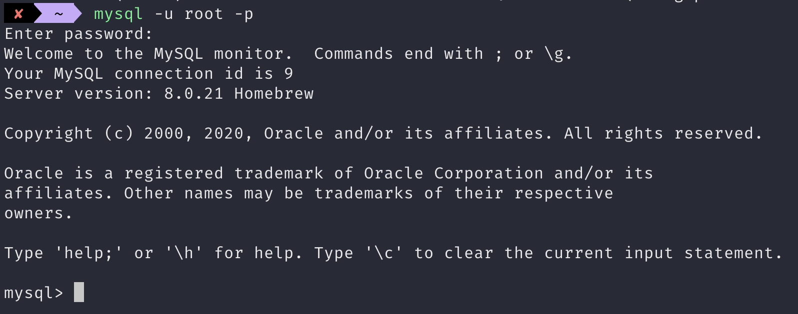
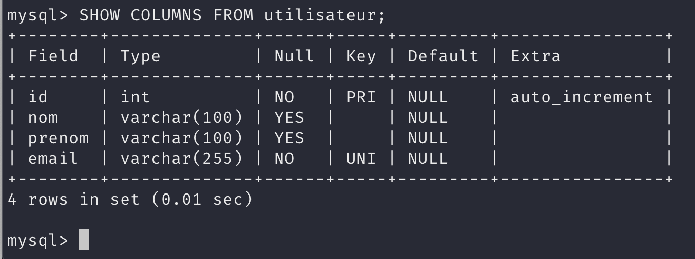
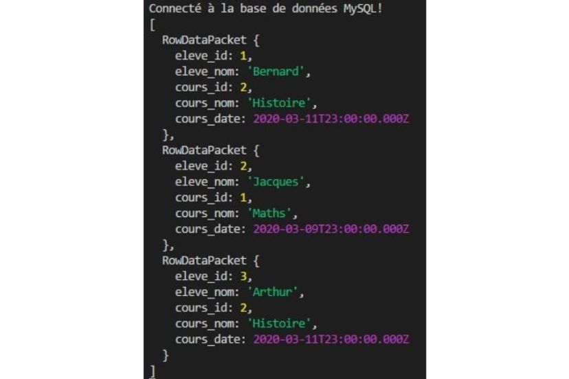
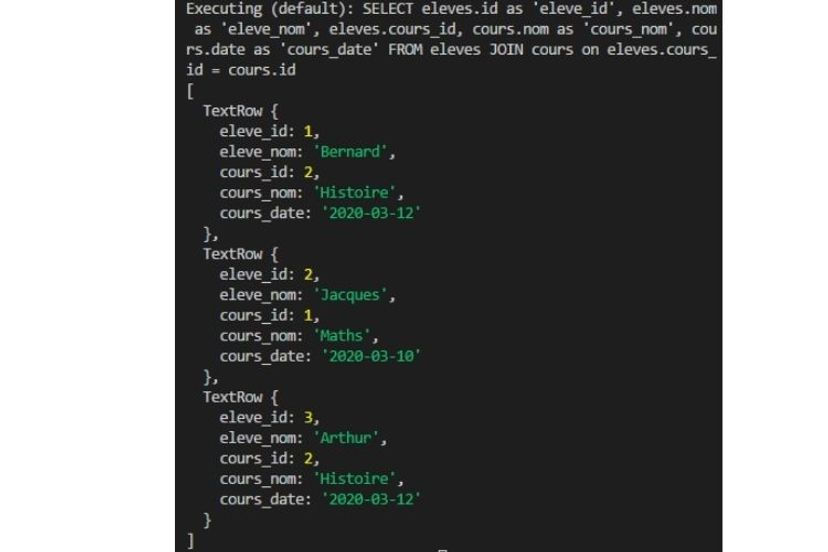

Implémentez vos bases de données relationnelles avec SQL
- Ressource -
- Cours et Tutos -
1.1 - Découvrez le système de gestion de base de données (SGBD) -
Découvrez votre mission dans ce cours
Dans ce cours, nous allons créer ensemble une base de données (BDD) pour une application imaginaire, Foodly.
J’utiliserai tout au long du cours l'abréviation BDD pour base de données .
les utilisateurs inscrits ;
les aliments disponibles.
Chacune de ces données aura des caractéristiques, comme l’e-mail pour l’utilisateur ou les calories pour les aliments.
Les données utilisateur et aliment à stocker dans la BDD Foodly
Choisissez votre SGBD
Le SGBD est le logiciel qui va vous permettre de manipuler les données d’une base .le langage SQL .
La relation entre le langage SQL et le SGBD lors d'une action sur l'application
Découvrez les différents SGBD
MySQL MySQL est le plus connu des SGBDOracle Database Oracle est le SGBD édité par Oracle CorporationPostgreSQL PostgreSQL est “l’autre” grand SGBD open-source disponible sur le marché.SQLite SQLite c’est le “petit frère”. Mais petit ne veut pas dire moins puissant, bien au contraire.
Pour vous aider, voici un tableau récapitulatif des forces et faiblesses de chaque SGBD :
MySQL
Oracle Database
PostgreSQL
SQLite
Popularité
très répandu
Utilisé par les grands groupes
moins répandu que les autres
répandu pour le prototypage
Prix
gratuit (licence fermée)
très cher (licence fermée)
gratuit (open-source)
gratuit (open-source)
Similarité avec le langage SQL
ne suit pas toujours la syntaxe SQL
ne suit pas toujours la syntaxe SQL
suit la syntaxe SQL de très près
suit la syntaxe SQL de très près
Entreprises utilisatrices
utilisé par Facebook
utilisé par Samsung
utilisé par Spotify
utilisé pour les apps Android
En résumé
Le langage SQL sert à communiquer entre votre application et votre base de données. MySQL est un système de gestion de bases de données (SGBD).
Moteur de stockage
Eviter de lier des tables qui n'ont pas le meme moteur de stockage.
MyISAM (Non transactionnel)
Utile si beaucoup de donnees , acces rapide
Rapide en ecriture
Tres rapide en lecture
Efficace pour la recherche
Efficace pour la recherche
Lors d'une requete sur une table celle-ci n'est pas accessible pour d'autre requetes
InnoDB (Transactionnel)
Beaucoup d'ecritures
Securiser les donnees
Coherence entre les donnees (tables)
Lors d'une requete sur une table seule la ligne concernee n'est pas accessible pour d'autre requetes
1.2 - Installez le SGBD MySQL -
Installez MySQL sur Windows
1.Téléchargez le programme d’installation de MySQL et lancez-le
Rendez-vous sur https://dev.mysql.com/downloads/installer/ et sélectionnez le programme d’installation à télécharger.
Je vous conseille de télécharger le deuxième programme (la version “community”),
Écran d'installation MySQL
Fenêtre d'acceptation des conditions générales
Sélection du paramétrage par défaut
Les autres options sont utiles si vous utilisez MySQL via un outil externe,
2.Lancez MySQL sur votre ordinateur
Pour lancer MySQL sur Windows, double-cliquez sur la console MySQL.3.Créez le mot de passe de l’utilisateur root de votre BDD
Avant de pouvoir lancer MySQL, il vous faut créer un utilisateur dit root, qui sera l’utilisateur nous permettant de manipuler notre BDD.En informatique, et notamment dans le monde des bases de données, l’utilisateur dit “root” (ou racine) est un utilisateur qui a tous les droits (création, suppression, mise à jour).
“Utiliser en production” désigne l’utilisation de votre base par votre application, depuis un serveur.
mysqladmin -u root password 'votresupermotdepassetrescomplique' Installez MySQL sur Mac
La manière la plus simple et efficace pour installer MySQL sur Mac est de passer par Homebrew.
1.Installez le gestionnaire Homebrew
Homebrew est un gestionnaire de paquets.https://brew.sh/index_fr
La page d’accueil de Homebrew
brew help
Données affichées dans votre terminal
Si ce n’est pas le cas, tentez de réinstaller Homebrew.
2.Installez MySQL via Homebrew
Maintenant que Homebrew est installé, il est temps d’installer MySQL !brew install [le nom de ce qu’on souhaite installer]
La commande complète pour installer MySQL est donc brew install mysql enter pour la valider.
3.Démarrez MySQL avec Homebrew
Pour que Homebrew puisse démarrer des processus (ici, celui de MySQL), utilisez la commande brew tap homebrew/services brew services start mysql brew services list mysql -V
Écran confirmant l’installation de Homebrew
4.Créez le mot de passe de l’utilisateur root de votre BDD
Il vous reste une ultime commande et le tour est joué !En informatique, et notamment dans le monde des bases de données, l’utilisateur dit “root” (ou racine) est un utilisateur qui a tous les droits (création, suppression, mise à jour).
“Utiliser en production” désigne l’utilisation de votre base par votre application, depuis un serveur.
mysqladmin -u root password 'votresupermotdepassetrescomplique'
La commande dans votre terminal
Installez MySQL sur Linux (Ubuntu)
La manière la plus simple et efficace pour installer MySQL sur Linux est de passer par le terminal.1.Installez MySQL via le terminal
Sur Linux, la vie est très simple car vous disposez d’un super gestionnaire de paquets : APT.sudo apt update enter pour la valider.sudo apt install mysql-community-server 2.Démarrez MySQL avec le terminal
Pour démarrer MySQL, il vous faut lancer le “service” de MySQL.sudo service mysql start 3.Créez le mot de passe de l’utilisateur root de votre BDD
Il vous reste une ultime commande et le tour est joué !En informatique, et notamment dans le monde des bases de données, l’utilisateur dit “root” (ou racine) est un utilisateur qui a tous les droits (création, suppression, mise à jour).
“Utiliser en production” désigne l’utilisation de votre base par votre application, depuis un serveur.
mysqladmin -u root password 'votresupermotdepassetrescomplique'
La commande dans votre terminal
En résumé
La première chose à faire pour utiliser un SGBD est de créer un utilisateur “root”, qui aura tous les droits pour créer et modifier des bases de données.
1.3 - Créez votre base de données (BDD) -
Créez votre BDD avec CREATE DATABASE
Une application, c’est le code informatique qui vous permet d’effectuer des actions.
Prenez Le Bon Coin : le code de l’application vous permet de voir des listes d’objets à acheter près de chez vous, de contacter leur propriétaire, etc.
Dans une BDD, on stocke plusieurs choses.
Si on reprend notre exemple de l’application Foodly, une pomme ou une poire sont chacune une instance d’un objet “fruit”.
Chaque application est associée à une base de données.
Une application complexe peut être reliée à plusieurs BDD à la fois, et ce, pour plusieurs raisons.
Attention lorsqu’on nomme les bases de données !
mysql -u root -p

Écran du terminal suite à l’entrée de votre mot de passe
CREATE DATABASE nomdelabase; CREATE DATABASE foodly;
Écran du terminal après avoir saisi la commande
SQL vous indique que la commande a fonctionné en répondantQuery OK .
USE nomdelabase; USE foodly;
Écran du terminal pour l’utilisation de la BDD
USE foodly;
Si jamais vous aviez besoin de changer de base de données, alors vous devriez répéter cette commande pour passer sur la nouvelle base.
Testez l’activation de votre BDD avec SHOW TABLES
Pour tester l’activation de votre base de données, vous allez y insérer votre premier objet.Définissez les types de données
Avant de pouvoir insérer quoi que ce soit, vous devez d’abord créer une table.
Le type de donnée est comme un papier d'identité.
Les types d’objets, catégorisés par leur nom. Les types de champs
CREATE TABLE utilisateur (
Query OK Votre objet utilisateur va être composé de plusieurs caractéristiques, aussi appelées champs .
Nom du champ
Type du champ et options
Description
id PRIMARY KEY (option)
Champ spécial obligatoire dans toutes les tables.
INTEGER (type)
Champ numérique sous forme de nombre entier.
NOT NULL (option)
Ce champ ne peut pas être nul.
AUTO_INCREMENT (option)
Ce champ sera créé par MySQL automatiquement, pas besoin de s'en soucier !
nom VARCHAR(100) (type)
Champ sous forme de texte,
prenom VARCHAR(100) (type)
Champ sous forme de texte,
email VARCHAR(255) (type)
Champ sous forme de texte,
NOT NULL (option)
Ce champ ne peut pas être nul.
UNIQUE (option)
Ce champ ne peut pas avoir la même valeur en double.
SGBD (en anglais).
CREATE TABLE aliment (
FLOAT BOOLEAN true false DEFAULT false
id nom marque sucre, calories, graisses, proteines bio
Voici un exemple de ce que donnerait cette table avec quelques aliments :
id
nom
marque
calories
sucre
graisses
proteines
bio
1
Pomme
Monoprix
65
14,4
0,4
0,4
FALSE
2
Oeuf Bio
Carrefour
167
0
11,1
14,2
TRUE
3
Brique de lait
Intermarché
414
43,2
13,5
28,8
FALSE
SHOW tables;
Écran du terminal après avoir saisi la commande SHOW tables
SHOW COLUMNS FROM lenomdematable; SHOW COLUMNS FROM utilisateur; SHOW COLUMNS FROM aliment;

Affichage des schémas des tables utilisateur et aliment
Lors des parties suivantes, je vous demanderai parfois de télécharger un fichier afin de mettre votre BDD à jour.
Pour ce faire, j’ai créé un projet GitHub disponible ici :
Github
À chaque fois que vous souhaiterez mettre à jour votre BDD :
Téléchargez le fichier correspondant depuis GitHub, chaque dossier sur GitHub représentant la partie du cours dans laquelle vous vous trouvez.
Placez ce fichier dans le dossier correspondant à votre utilisateur Windows, Mac ou Linux.
Allez dans votre terminal, entrez la commande mysql -u root -p nom_de_la_base_de_donnees < nom_du_fichier.sql
En résumé
Pour créer une base de données, on utilise la commande CREATE DATABASE; Une table est un espace dans votre base de données qui va stocker des objets de même type. On la crée avec la commande CREATE TABLE; Pour vérifier la création des tables, on utilise la commande SHOW COLUMNS FROM table;
1.4 - Les contraintes -
Les contraintes sont les regles definies sur les tables lors de la creation des tables.
NOT NULL DEFAULT DEFAULT 0 CHECK CHECK(prix > 0) Ajouter la contrainte CHECK
ALTER TABLE nomdelatable
Ajouter la contrainte CHECK sur plusieurs champs
ALTER TABLE nomdelatable
Supprimer la contrainte CHECK sur plusieurs champs
ALTER TABLE nomdelatable
UNIQUE Ajouter la contrainte UNIQUE sur 'user_name'
ALTER TABLE nomdelatable
Ajouter la contrainte UNIQUE sur plusieurs champs
ALTER TABLE nomdelatable
Supprimer la contrainte UNIQUE sur plusieurs champs
ALTER TABLE nomdelatable
PRIMARY KEY AUTO_INCREMENT
.
Ajouter la cle primaire a 'user_name'
ALTER TABLE nomdelatable
AUTO_INCREMENT INDEX page explique le fonctionnement des index et leurs intérêts pour accroître les performances de lectures des données.
2.1 - Insérez des données dans votre BDD -
L’acronyme CRUD où MAJ signifie Mettre À Jour
Foodly de cette partie 2.
Insérez des objets uniques pour alimenter votre BDD
Première étape : vous allez ajouter un utilisateur à votre BDD, car une application sans utilisateurs n’est pas une BDD.
Elle utiliserait la commande
SQLINSERT INTO .
Cette commande prend en compte :
les paramètres de la table dans laquelle vous souhaitez ajouter l’objet (ici la table “utilisateur”) ; l’ordre des colonnes (ou caractéristiques de l’objet) ; ainsi que les valeurs correspondantes pour l’objet.
Insertion d’un utilisateur dans la BDD de Foodly
Nom du champ
Descriptif du champ
Exemple de valeur
id
identifiant unique de l'utilisateur dans la BDD
1
nom
nom de famille de l'utilisateur
Durantay
prenom
prénom de l'utilisateur
Quentin
email
email de l'utilisateur
quentin@gmail.com
Remarquez que je ne me préoccupe pas de l’id.
INSERT INTO `utilisateur` (`nom`, `prenom`, `email`)
Si vous exécutez cette commande plusieurs fois, vous remarquerez un message d’erreur.
On indique en SQL qu’on souhaite ajouter un objet avec INSERT INTO On écrit ensuite le nom de la table dans laquelle on souhaite ajouter l’objet, ici 'utilisateur' On écrit ensuite entre parenthèses la liste des colonnes que l’on va ajouter, ainsi que leur ordre. On ajoute le mot clé SQL VALUES On écrit la liste des valeurs de l’objet qu’on souhaite ajouter, dans le même ordre que les colonnes citées en 3.
Insérez plusieurs objets à la fois
Vous avez désormais une application avec un utilisateur, mais il va vous en falloir plusieurs !
INSERT INTO `utilisateur` (`nom`, `prenom`, `email`)
Nom du champ
Descriptif du champ
Exemple de valeur
id
identifiant unique de l'aliment dans la BDD
1
nom
nom de l'aliment
poire
marque
marque de l'aliment
Monoprix
calories
nombre de calories contenues dans l'aliment (en kcal)
72
sucre
la concentration en sucre de l’aliment (en grammes)
19,1
graisses
la concentration en graisses de l’aliment (en grammes)
0,2
proteines
la concentration en protéines de l’aliment (en grammes)
0,4
INSERT INTO `aliment` (`nom`, `marque`, `sucre`, `calories`, `graisses`, `proteines`,`bio`)
Vous vous demandez sûrement pourquoi certaines valeurs sont entre guillemets simples, d’autres entre backticks (`) et certaines sans rien.
La rédaction des valeurs selon leur type
Pour signaler à SQL des noms de tables ou colonnes, utilisez des backticks. Pour les valeurs de type texte (souvenez-vous, les types TEXT ou VARCHAR ), vous devez les écrire entre guillemets.'lait d\'amande' Pour le reste (les valeurs de type BOOLEAN , INTEGER ou FLOAT ), pas besoin de guillemets ! À vous de jouer !
Essayez maintenant de créer un nouvel aliment.
nom
marque
calories
sucre
graisses
proteines
bio
haricots verts
Monoprix
25
3
0
1,7
FALSE
En résumé
On ajoute un objet à une table avec la commande INSERT INTO Lors de l’utilisation de cette commande, on mentionne quelles sont les colonnes (et dans quel ordre) que l’on va remplir. On peut ajouter un ou plusieurs objets à la fois, là aussi, en les séparant par des virgules.
2.2 - Sélectionnez les données présentes dans votre BDD -
Lisez les objets que vous venez de créer
Vous venez d’ajouter vos premières données dans votre BDD, c’est top !
Le mot clé pour récupérer et lire de la donnée est SELECT .
SELECT * FROM utilisateur;
Voici ce que vous devriez voir apparaître après avoir saisi la commande
La commande SELECT
Décortiquons ensemble la commande que nous venons d’effectuer pour arriver à ce résultat :
SELECT * indique que l’on souhaite récupérer toutes les colonnes (ou champs) présents dans cette table (ici : id, nom, prenom et email) ;FROM table permet à MySQL de comprendre depuis quelle table nous souhaitons récupérer de la donnée.
Lisez quelques colonnes seulement
C’est super ça, mais je suis réellement obligé de récupérer toutes les colonnes à chaque fois ?
SELECT `nom`, `prenom`, `email` FROM utilisateur;
id
Écran du terminal suite à la commande saisie
INSERT SELECT SELECT À votre tour d’essayer !
Je vous propose de lister tous les noms et les calories associées pour chaque aliment présent dans la BDD de Foodly.
SELECT `nom`,`calories` FROM aliment;
En résumé
Les objets d’une table se lisent avec la commande SELECT FROM
Lors de l’utilisation de cette commande, on mentionne quelles sont les colonnes que l’on veut afficher en les séparant par des virgules .
2.3 - Mettez à jour les données de votre BDD -
Mettez à jour un objet en particulier
Admettons maintenant qu’un utilisateur souhaite mettre à jour son e-mail via l’application.UPDATE
UPDATE `utilisateur` SET `email` = 'quentind@gmail.com' WHERE `id` = '1';
La commande UPDATE
Mot clé
Description
UPDATE tableSignifie à SQL que vous souhaitez mettre à jour de la donnée dans votre BDD.
SET colonne = valeurSert à indiquer à SQL quelles sont la ou les colonnes à modifier,
WHERE colonne = valeurC’est ce qu’on appelle un filtre.
Il est tout à fait possible d’utiliser UPDATE WHERE
À vous de jouer !
Nous avons oublié de préciser le type de pomme vendue à Intermarché.Reponse
UPDATE aliment SET `nom`= 'Pomme Golden' WHERE `id`= '2';
En résumé
On met à jour les objets d’une table avec la commande UPDATE Lors de l’utilisation de cette commande, on mentionne quelles sont les colonnes qu’on souhaite mettre à jour avec SET Si on ne filtre pas avec WHERE mettre à jour tous les objets de la table.
2.4 - Supprimez des objets dans votre BDD -
Supprimez un objet en particulier
Finissons par un dernier cas d’usage.
Ici, le mot clé est DELETE
Attention toutefois, cette commande est très simple à utiliser, parfois trop même !
DELETE FROM `utilisateur` WHERE `id` = '2';
SELECT
Là aussi, il vaut mieux utiliser cette commande avec WHERE
À vous de jouer !
Bon, on va dire qu’on s’est complètement trompé pour notre pomme golden.Reponse DELETE FROM aliment WHERE `id`='2';
En résumé
On supprime les objets d’une table avec la commande DELETE Si on ne filtre pas avec WHERE
Vous allez apprendre dans cette partie comment extraire uniquement l’information qui vous intéresse, et en tirer quelques enseignements !Foodly pour cette partie.
Isolez un objet unique
Dans la partie précédente, à chaque fois que vous lisiez de la donnée, c’était celle d’une table toute entière.
Pour rappel, une commande telle que SELECT * FROM aliment;
Il s’agit de la commande WHERE
SELECT * FROM aliment WHERE id = 4;
id est le numéro 4 !WHERE
SELECT * FROM aliment WHERE nom = “poire”;
nom est 'poire' !
Vous pouvez appliquer WHERE
À noter que WHERE SELECT UPDATE DELETE
Isolez plusieurs objets répondant à un critère de comparaison
OK, c’est utile de ne pouvoir sélectionner qu’un seul objet.WHERE =
supérieur à ( > ) ; inférieur à ( < ) ; supérieur ou égal à (>=) ; et inférieur ou égal à (<=).
SELECT * FROM aliment WHERE calories < 90;
teneur en calories n’excède pas (strictement) 90 kcal
Isolez des objets à partir d’une comparaison sur du texte
La limite de WHERE
Il existe un autre mot clé pour effectuer des comparaisons sur du texte : il s’agit du mot clé LIKE
WHERE
SELECT * FROM utilisateur WHERE email LIKE “%gmail.com”;
e-mail se termine par “gmail.com” .
L’utilisation du pourcentage (%)
Ce “%gmail.com” signifie que vous souhaitez récupérer tout texte finissant par “gmail.com”.
Le pourcentage (%) indique à SQL :
“il peut y avoir autant de texte que tu veux, et aussi long que tu veux avant le “gmail.com” ;
“ne prête pas attention au contenu qu’il y a avant gmail.com.”
Si vous souhaitiez récupérer le texte qui commence par “gmail.com” vous écririez : “gmail.com%”.
Enfin, si vous cherchiez tout texte qui contient “gmail”, peu importe qu’il soit au début ou à la fin, vous écririez “%gmail%”.
Ordonnez les objets récupérés pour chaque requête
Reprenons l’exemple de notre utilisateur qui cherche à afficher les aliments peu caloriques dans Foodly.ORDER BY calories ASC
Le mot clé ORDER BY
Ce mot clé vous permet d’ordonner une colonne par ordre croissant (ascending en anglais, d’où le mot clé SQL ASC DESC
SELECT * FROM aliment ORDER BY calories ASC;
aliments dont les calories ne dépassent pas 90 kcal , mais de manière décroissante :
SELECT * FROM aliment WHERE calories < 90 ORDER BY calories DESC;
ORDER BY
soit dans l’ordre alphabétique ( ASC SELECT * FROM utilisateurs ORDER BY prenom ASC; soit dans l’ordre opposé ( DESC SELECT * FROM utilisateurs ORDER BY prenom DESC;
À vous de jouer !
Imaginons que je vous demande tous les aliments qui ne sont pas bio dans la base, classés par ordre décroissant de contenance en protéines.SELECT * FROM aliment WHERE bio = false ORDER BY proteines DESC; En résumé
Vous avez appris comment filtrer la donnée que vous souhaitez récupérer avec la commande WHERE = LIKE Vous savez désormais ordonner les résultats d’une requête SQL avec la commande ORDER BY
3.2 - Effectuez des opérations et sauvegardez vos requêtes -
Comptez le nombre d’objets récupérés via une requête
Combien d’objets répondent à un critère (ou une requête SQL) donné ?COUNT SELECT
En plus de ne faire “que compter”, COUNT SELECT
SELECT COUNT(*) FROM utilisateur WHERE email LIKE "%gmail.com";
En appliquant un COUNT(*) COUNT(colonne) COUNT(DISTINCT colonne)
SELECT COUNT(*)FROM utilisateur; SELECT COUNT(nom) FROM utilisateur; SELECT COUNT(DISTINCT nom) FROM utilisateur; Effectuez des opérations sur des données chiffrées
Admettons que l’on souhaite connaître le total calorique d’un groupe d’articles, ou bien la contenance moyenne en sucre d’un groupe d’aliments : au lieu de tout noter à la main depuis la base de données, laissez MySQL effectuer ces opérations pour vous !
AVG SUM MAX MIN
SELECT MAX(sucre) FROM aliment;
SELECT AVG(calories) FROM aliment WHERE calories >= 30;
À vous de jouer !
Je vous laisse tester ces opérations avec MIN SUM
SELECT COUNT(*) FROM aliment WHERE bio = false;
SELECT MAX(proteines) FROM aliment WHERE bio = false;
SELECT MIN(proteines) FROM aliment WHERE bio = false;
SELECT AVG(proteines) FROM aliment WHERE bio = false;
Sauvegardez vos requêtes avec CREATE VIEW
MySQL a un système de “vues” qui permet de créer des tables temporaires à partir d’une commande SQL.
CREATE VIEW utilisateurs_gmail_vw AS SELECT * FROM utilisateur WHERE email LIKE "%gmail.com";
La commande CREATE VIEW
“utilisateurs_gmail_vw” .
SELECT * FROM utilisateurs_gmail_vw;
Utilisation de la commande CREATION VIEW avec SELECT * FROM
La convention chez les utilisateurs de SQL est de toujours préfixer le nom d’une vue avec “_vw”, pour la distinguer des “vraies” tables.
SELECT * FROM utilisateurs_gmail_vw WHERE prenom LIKE "%m%";
Grâce aux vues, vous pouvez “raccourcir” des requêtes SQL complexes et rébarbatives, vous permettant d’aller encore plus loin dans vos analyses !
À vous de jouer !
Essayez à présent par vous-même la création d'une vue.
CREATE VIEW aliments_non_bio_vw AS SELECT * FROM aliment WHERE bio = false ORDER BY proteines DESC;
En résumé
Vous avez appris à effectuer des opérations mathématiques simples avec des mots clés comme COUNT AVG
Vous savez sauvegarder des requêtes avec CREATE VIEW
3.3 - Implémentez des relations entre vos données grâce à JOIN -
Les bases de données SQL sont dites de type “relationnel”.relier plusieurs types de données entre elles .stocker les relations entre ces mêmes utilisateurs et certains aliments .Extrayez des informations via une relation 1 à plusieurs
Beaucoup d’utilisateurs vont utiliser Foodly, et ce, dans plusieurs pays.stocker la langue préférée de chaque utilisateur.Foodly que vous avez téléchargée au début de cette partie.
La relation un à plusieurs entre les utilisateurs et les langues
On parle alors d’une relation 1 à plusieurs entre utilisateur et langue (one-to-many, en anglais).
Dans ce cas spécifique, une langue est reliée à plusieurs utilisateurs.
INSERT INTO `langue` VALUES ('français');
Chaque utilisateur se voyant relié à une langue,id unique de la langue associée.{nom de l’objet associé}_id langue_id
Les utilisateurs de la base de données mise à jour dans la partie 2 ont ainsi un champ langue_id id de la langue qu’ils souhaitent utiliser.
Par exemple, le premier utilisateur a comme langue_id
Il existe une commande qui est justement là pour régler ce genre de problème.JOIN
expliquer à MySQL comment joindre deux tables selon un identifiant qu’elles ont en commun .
la langue_id du premier utilisateur est le français ; l’id du français est 1.
Vous allez spécifier à MySQL de joindre les tables “utilisateur” et “langue” en lui précisant que l’id de langue et langue_id de l’utilisateur doivent êtres égaux !
SELECT * FROM `utilisateur`
Nous avons demandé à MySQL de sélectionner tous les utilisateurs.SELECT * FROM `utilisateur` Auxquels nous voulons joindre les langues.JOIN `langue` En précisant à MySQL de les relier, en considérant que l’id de la langue est stockée dans chaque utilisateur dans le champ langue_id .ON `utilisateur`.`langue_id` = `langue`.`id`
L'utilisation de la commande JOIN
À vous de jouer !
Admettons que je vous demande de me donner tous les noms de famille des utilisateurs ayant sélectionné le français.
SELECT * FROM utilisateur
Obtenez des informations complexes via une relation plusieurs à plusieurs
Reprenons ensemble l’idée première de l’application Foodly.
un même utilisateur peut stocker plusieurs aliments scannés ; un aliment peut lui-même être scanné par plusieurs utilisateurs.
La relation un à plusieurs entre les utilisateurs et les aliments
Chaque objet d’une table pouvant être relié à plusieurs objets de l’autre table, et vice versa. Il n’est pas possible par exemple de stocker plusieurs id d’aliments au sein d’un même utilisateur. utilisateur_aliment utilisateur_id aliment_id
On appelle table de liaison ce genre de table.{table1}_{table2} relier les tables 1 et 2 qui y sont stockées,l’id d’un objet de la table 1 , à l’id de l’objet de la table 2 correspondant.
La table de liaison relie les utilisateurs aux aliments
JOIN
SELECT * FROM utilisateur
Décomposons cette commande ensemble :
Nous avons demandé à MySQL de sélectionner tous les utilisateurs.SELECT * FROM `utilisateur`
Auxquels nous voulons joindre la table utilisateur_aliment JOIN `utilisateur_aliment`
En précisant à MySQL de les relier en considérantid de l’utilisateur est stocké en tant que utilisateur_id utilisateur_aliment ON (utilisateur.id = utilisateur_aliment.utilisateur_id)
À ce JOIN JOIN JOIN `aliment`
Pour ce faire, on précise à MySQL que l’id de l’aliment utilisateur_aliment aliment_id ON (aliment.id = utilisateur_aliment.utilisateur_id)
À vous de jouer !
Admettons que vous souhaitiez voir tous les aliments sélectionnés par les utilisateurs dont l’adresse e-mail et une adresse Gmail.
SELECT * FROM utilisateurs_gmail_vw
En résumé
Vous savez désormais joindre plusieurs objets entre eux grâce au mot clé JOIN.
Et ce, que ce soit pour une relation un à plusieurs plusieurs à plusieurs grâce à une table de liaison .
4.1 - Modifiez la structure d’un objet avec ALTER TABLE -
Ajoutez ou supprimez un champ
Ajoutez un champ aux aliments
Le dernier rapport sur l’utilisation de Foodly vient de tomber.ALTER TABLE ALTER TABLE aliment ADD vitamines_c FLOAT;
de modifier la structure d’une table avec ALTER TABLE quelle table modifier (ici "aliment” ) ; que la modification va faire ajouter une colonne avec ADD le nom de cette nouvelle colonne (ici “vitamines_c” ) ; enfin, le type de la colonne (ici,FLOAT
La commande ALTER TABLE
À noter que le type n’est parfois pas seul.
On peut aussi (comme dans la partie 1), mentionner à MySQL qu’on rajoute une colonne qui est :
une clé primaire (PRIMARY KEY avec une valeur par défaut (DEFAULT valeur_par_défaut non nulle (NOT NULL
À vous de jouer !
Admettons que l’on souhaite rajouter une colonne à la table “langue” code ISO des langues (par exemple : “fr-fr” pour le Français de métropole).
ALTER TABLE langue ADD code VARCHAR(100);
Supprimez un champ aux aliments
Le management de chez Foodly nous mentionne d’autres changements à effectuer sur l’application, qui impliquent la BDD.supprimons la colonne “bio” de la table “aliment” avec DROP
ALTER TABLE aliment DROP bio;
On modifie toujours la structure d’une table avecALTER TABLE. On lui signale à nouveau quelle table modifier (ici, “aliment”). On lui indique que la modification va supprimer une colonne avecDROP. On mentionne le nom de la colonne à supprimer (ici, “bio”).
Utilisation de DROP
Il faut néanmoins faire attention lorsqu’on utilise cette commande.
À vous de jouer !
Maintenant, admettons que le service légal de Foodly vous dise que stocker des noms de famille va à l’encontre des conditions de protection des données des utilisateurs.
ALTER TABLE utilisateur DROP nom;
Modifiez un champ existant
Modifiez un champ des aliments
Le management de Foodly revient encore une fois vers vous !
ALTER TABLE aliment MODIFY calories FLOAT;
On modifie toujours la structure d’une table avec ALTER TABLE On lui signale à nouveau quelle table modifier (ici, “aliment” ). On lui indique que la modification va modifier le type d’une colonne avec MODIFY On mentionne le nom de la colonne à modifier (ici, “calories” ). On indique le nouveau type de la colonne (ici,FLOAT
L'utilisation de FLOAT
À vous de jouer !
Les développeurs viennent vous voir affolés !
ALTER TABLE utilisateur MODIFY email varchar(500);
Renommez un champ des aliments
Ce coup-ci, c’est la designer de Foodly qui revient vers vous : les utilisateurs sont perturbés…
ALTER TABLE aliment CHANGE sucre sucres FLOAT;
On modifie toujours la structure d’une table avec ALTER TABLE On lui signale à nouveau quelle table modifier (ici, “aliment” ). On lui indique que la modification va modifier le nom d’une colonne avec CHANGE
On mentionne le nom de la colonne à renommer, ainsi que son nouveau nom (ici, sucre sucres
On indique le nouveau type de la colonne (ici,FLOAT
À vous de jouer !
A présent, les développeurs trouvent que le nom code code_pays
ALTER TABLE langue CHANGE code code_pays varchar(100);
En résumé
Vous savez que toute modification de la structure d’un objet s’effectue avec une commande ALTER TABLE
Pour ajouter un champ à un objet, il vous faut utiliser le mot clé ADD
Pour supprimer un champ, le mot clé est DROP
Pour modifier un champ, le mot clé est MODIFY CHANGE
4.2 - Ajoutez une relation un à plusieurs -
Voyons dans ce chapitre comment ajouter une relation un à plusieurs, en créant notre table "famille" ."lieu" .
Ajoutez une nouvelle table "famille"
Nous avons obtenu une nouvelle demande d’amélioration de l’application de la part des utilisateurs !"famille" .
Pour cela, il faudrait que les familles d’aliments soient sur une table distincte de celle des aliments !
joindre plusieurs tables entre elles, il est temps de construire une telle relation entre tables.
CREATE TABLE famille (
INSERT INTO famille (`nom`) VALUES ('légumes');
Ajoutez la relation entre famille et aliment
Une des choses à déterminer lors de l’ajout d’une relation, c’est de savoir si :
c’est une relation un à plusieurs ;
ou une relation plusieurs à plusieurs .
Il s’agit donc d’une relation un à plusieurs.
l’objet qui se trouve du côté “plusieurs” de la relation qui va être modifié , ici les aliments.
Ajout du champ famille_id
Modification de ce champ pour signaler à MySQL que c’est une référence à la table famille.
Modification d’un objet pour y stocker une relation.
famille_id
ALTER TABLE aliment
ALTER TABLE aliment
On signale à MySQL qu’on souhaite modifier la table “aliment” , pour y ajouter une colonne
On dit à MySQL que la colonne famille_id FOREIGN KEY (famille_id)
On indique ensuite ce à quoi cette clé fait référence.“id” de la table “famille” (soit la commande REFERENCES famille(id)
Enfin, sûrement la partie la plus obscure pour vous, on indique à MySQL le comportement à adopter en cas de suppression de l’objet “unique” (ici, la “famille”).ON DELETE
RESTRICT NO ACTION : MySQL va empêcher la suppression tant que “fruits” est référencé sur au moins un objet “aliment”.SET NULL CASCADE
Actions de la commande ON DELETE
UPDATE `aliment` SET `famille_id` = '1' WHERE `nom` = 'haricots verts';
N’oubliez pas, “légumes” ayant été ajouté en premier à la table “famille”, il a l’id numéro 1.
JOIN
SELECT * FROM aliment
À vous de jouer !
Faisons un petit exercice :
CREATE TABLE reduction
INSERT INTO reduction (valeur) VALUES ('-30%');
INSERT INTO reduction (valeur) VALUES ('-50%');
reduction_id
ALTER TABLE aliment ADD reduction_id INT;
ALTER TABLE aliment
UPDATE aliment SET reduction_id=1 WHERE id=1;
JOIN
SELECT * from aliment JOIN reduction ON aliment.reduction_id = reduction.id WHERE aliment.id=1;
En résumé
Vous savez ajouter une relation un à plusieurs entre deux objets en ajoutant à l’objet A un champ qui contiendra l’id (ou clé primaire) de l’objet B.
4.3 - Ajoutez une relation plusieurs à plusieurs -
Souvenez-vous on aimerait ensuite ajouter le type de magasin où sont présents les aliments.Ajoutez une nouvelle table “lieu”
La dernière demande de mise à jour des utilisateurs est arrivée !stocker les lieux de vente dans la BDD .relation plusieurs à plusieurs .
un nom (exemple : Carrefour City) ;
un type (exemple : supermarché).
CREATE TABLE lieu (
INSERT INTO `lieu` (`nom`, `type`) VALUES ('Carrefour City', 'supermarché');
La nouvelle table est créée, et un objet y a été inséré.Ajoutez la table de liaison
Les aliments vont avoir des relations un à plusieurs avec la table de liaison.
Son nom doit regrouper les deux tables qu’elle relie, sous la forme : “table1_table2” .
Elle n’a que deux champs à stocker : table1_id table2_id
Ces id sont donc des références aux id des autres tables.
Sa clé primaire n’est autre que l’association de ces deux id (association qui doit toujours être unique).
CREATE TABLE aliment_lieu (
On crée une nouvelle table avec le nom des deux tables qu’elle relie (ici la table “aliment” , ainsi que la table “lieu” ).
On ajoute les références aux id de ces deux tables :
aliment_id “aliment” ;lieu_id “lieu” ;on signale à MySQL comment mettre à jour la BDD en cas de suppression ou de mise à jour d’un objet de “aliment_lieu”.
On explique à MySQL que l’id de cette table sera l’association entre les deux id précédents.
ON UPDATE ON DELETE
Actions de la commande ON UPDATE
“aliment_lieu” , avec l’id id
INSERT INTO `aliment_lieu` (`aliment_id`, `lieu_id`) VALUES ('3', '1');
JOIN
SELECT * FROM aliment
Ici, on joint la table aliment à la table lieu via la table de liaison, comme si c’était une simple relation un à plusieurs répétée.
À vous de jouer !
On souhaite savoir quels sont les appareils sur lesquels les utilisateurs ont installé Foodly (par exemple : mac, pc, android, etc)."appareil"
CREATE TABLE appareil (
"appareil"
INSERT INTO appareil (type) VALUES ('Iphone');
INSERT INTO appareil (type) VALUES ('Android');
INSERT INTO appareil (type) VALUES ('PC');
INSERT INTO appareil (type) VALUES ('MAC');
utilisateur_appareil
CREATE TABLE utilisateur_appareil (
utilisateur_id INT NOT NULL,
INSERT INTO utilisateur_appareil (utilisateur_id, appareil_id)
INSERT INTO utilisateur_appareil (utilisateur_id, appareil_id)
SELECT * FROM utilisateur
En résumé
Vous savez ajouter une relation plusieurs à plusieurs entre deux objets en créant une table de liaison qui contiendra les id de chaque objet .
5 - Connecter une base de données MySQL à une app Node.js
Plusieurs librairies NodeJS permettent d’établir une connexion avec une base de données MySQL et d'exécuter des requêtes.
mysql Sequelize
Utiliser le module mysql pour utiliser une base de données MySql en Node
Commencez par installer le module mysql dans le dossier de votre projet Node.js avec npm install :
npm install mysql
const mysql = require('mysql');
Se connecter à la base MySQL avec le module mysql
Pour vous connecter à votre base MySQL, renseignez l’hôte, l’utilisateur et le mot de passe spécifié lors de l’installation de MySQL sur votre système :
const db = mysql.createConnection({
connect pour vous connecter à votre base de données MySQL.
db.connect(function(err) {
Créer une base de données MySQL en Node.js avec le module mysql
Pour créer une base de données MySQL, exécutez simplement une requête CREATE DATABASE
avec la fonction query() dans le code de votre app :
const mysql = require('mysql');
Exécuter des requêtes SQL sur une base MySQL avec NodeJS
Vous pouvez ainsi exécuter tout type de requête SQL, comme par exemple une jointure :
const mysql = require('mysql');

Voici la réponse fournie par le package mysql invoqué depuis notre fichier javascript
Utiliser une base de données MySQL en NodeJS avec Sequelize
Pour utiliser Sequelize afin d’interagir avec votre base de données MySQL en Node, il vous faut d’abord installer le driver mysql2 .
npm install mysql2
const { Sequelize } = require('sequelize');
const sequelize = new Sequelize("nom_base_de_donnees", "nom_utilisateur", "mot_de_passe_utilisateur", {
authenticate()
, mais cette partie n’est pas nécessaire pour exécuter des requêtes sur votre base :
try {
Créer une base de données MySQL en Node.js avec Sequelize
Pour créer une base de données MySQL en Node avec Sequelize, ajoutez simplement une requête CREATE DATABASE
dans un appel à la fonction query() à votre code :
const sequelize = new Sequelize("", "nom_utilisateur", "mot_de_passe_utilisateur", {
Exécuter des requêtes SQL sur une base MySQL avec Sequelize
Avec la fonction query()
, vous pouvez exécuter n’importe quelle requête SQL sur votre base de données,
const sequelize = new Sequelize("mabdd", "nom_utilisateur", "mot_de_passe_utilisateur", {

Réponse SQL via le package Seequelize